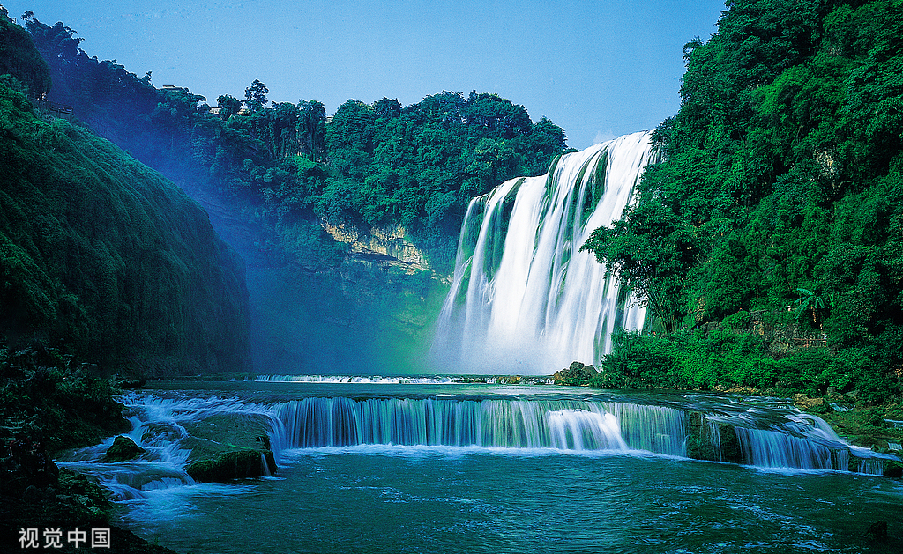
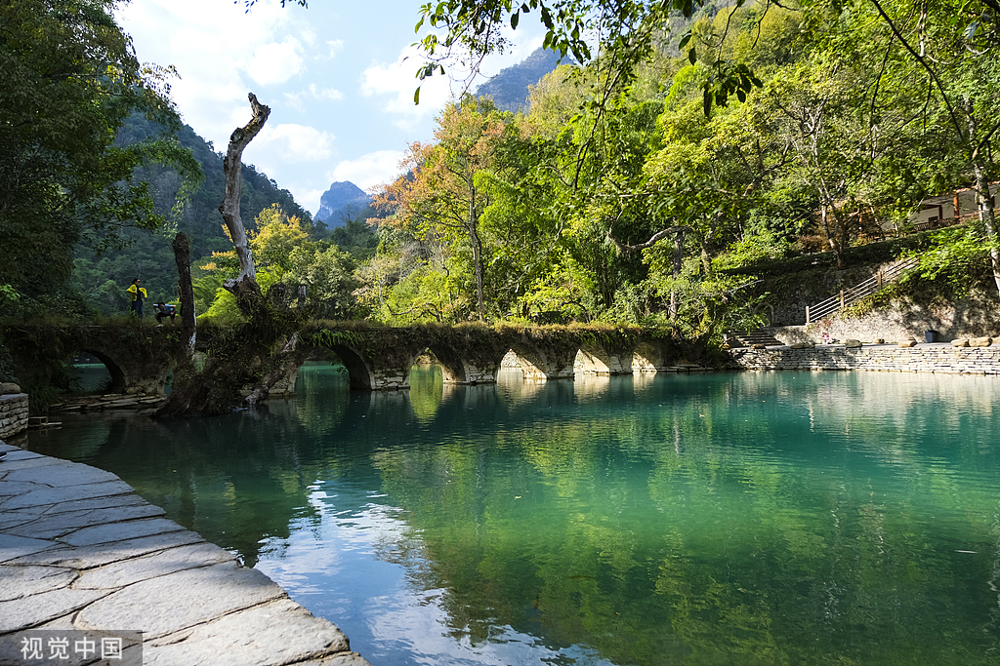
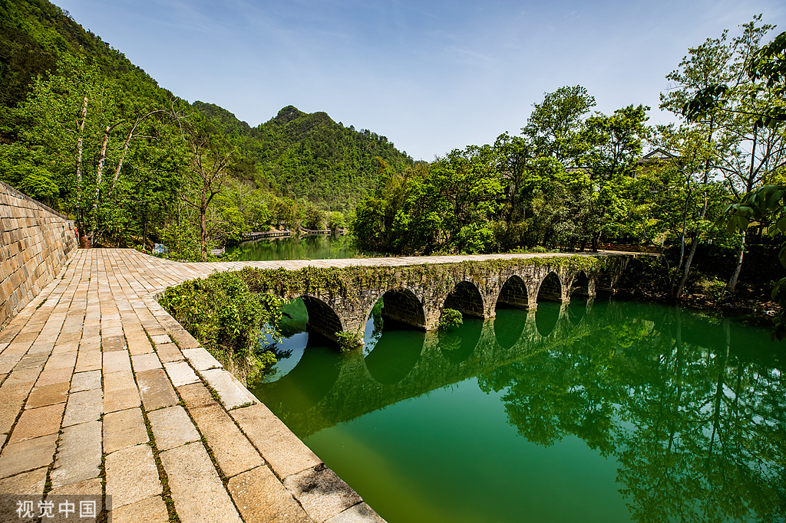

自然景观行程
贵阳-黄果树-荔波小七孔，感受大自然的鬼斧神工
三日行程安排
第一天：贵阳出发 - 黄果树瀑布
08:00-10:00
贵阳出发
从贵阳市区乘坐旅游大巴前往黄果树景区（车程约2小时）
10:00-12:00
参观黄果树大瀑布
游览亚洲第一大瀑布，最佳观赏时间：上午10-12点

12:00-13:00
午餐时间
品尝当地特色美食：酸汤鱼、苗家腊肉
13:00-17:00
游览天星桥景区
欣赏水上石林、溶洞奇观等自然景观
第二天：荔波小七孔
08:00-10:30
前往荔波
从黄果树出发前往荔波小七孔景区（车程约2.5小时）
10:30-12:30
游览小七孔古桥
欣赏七孔古桥及周边山水风光，最佳观赏时间：上午

12:30-13:30
午餐时间
品尝当地布依族特色美食
13:30-17:00
游览卧龙潭、水上森林
欣赏卧龙潭的碧绿水面和水上森林的独特景观
第三天：荔波大七孔 - 返回贵阳
08:00-11:00
游览大七孔景区
参观天生桥、恐怖峡等壮观的自然景观

11:00-12:00
午餐时间
在景区附近享用午餐
12:00-15:00
返回贵阳
乘车返回贵阳市区（车程约3小时）
15:00-17:00
自由活动
在贵阳自由活动，可游览甲秀楼、黔灵山公园等
餐饮推荐
黄果树地区
- 特色酸汤鱼 - 当地苗族传统美食
- 苗家腊肉 - 烟熏腊肉配糯米饭
- 野生菌火锅 - 新鲜野生菌类
荔波地区
- 布依族酸肉 - 布依族特色腌制肉品
- 竹筒饭 - 竹筒蒸制的特色米饭
- 荔波豆腐圆 - 当地特色豆制品
交通指南
贵阳 → 黄果树
方式：旅游大巴
时间：约2小时
发车点：贵阳旅游集散中心
黄果树 → 荔波
方式：旅游大巴
时间：约2.5小时
注意事项：建议提前预订
荔波 → 贵阳
方式：旅游大巴
时间：约3小时
发车频率：每天多班